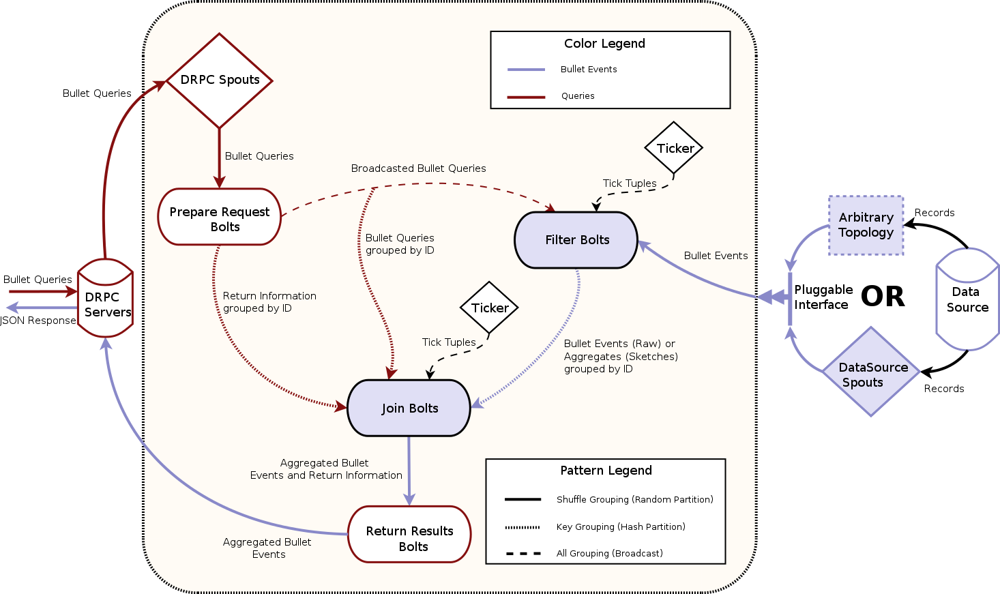

Storm architecture
This section describes how the Backend architecture is implemented in Storm.
Storm DRPC
Bullet on Storm is built using Storm DRPC. DRPC or Distributed Remote Procedure Call, is built into Storm and consists of a set of servers that are part of the Storm cluster. When a Storm topology that uses DRPC is launched, it registers a spout with a unique name (the procedure in the Distributed Remote Procedure Call) with the DRPC infrastructure. The DRPC Servers expose a REST endpoint where data can be POSTed to or a GET request can be made with this unique name. The DRPC infrastructure then sends the request (a query in Bullet) through the spout(s) to the topology that registered that name (Bullet). The result from topology is sent back to the client. We picked Storm to implement Bullet on first not only because it was the most popular Streaming framework at Yahoo but also since DRPC provides us a nice and simple way to handle getting queries into Bullet and sending responses back.
Thrift and DRPC servers
DRPC also exposes a Thrift endpoint but the Bullet Web Service uses REST for simplicity. When you launch your Bullet Storm topology, you can POST Bullet queries to a DRPC server directly with the function name that you specified in the Bullet configuration. This is a quick way to check if your topology is up and running!
Topology
For Bullet on Storm, the Storm topology implements the backend piece from the full Architecture. The topology is implemented with the standard Storm spout and bolt components:

The components in Architecture have direct counterparts here. The DRPC servers, the DRPC spouts, the Prepare Request bolts comprise the Request Processor. The Filter bolts and your plugin for your source of Data make up the Data Processor. The Join bolt and the Return Results bolt make up the Combiner.
The red colored lines are the path for the queries that come in through Storm DRPC and the blue is for the data from your data source. The pattern on the lines denote how the data (Storm tuples) is moved to the next component. Dashed indicates a broadcast (sent to all instances of the component), dotted indicates a key grouping (sent to a particular instance based on hashing on a particular field), and solid indicates a shuffle (randomly sent to an instance).
What's a Ticker?
The Ticker component is attached to the Filter and Join Bolts produce Storm tuples at predefined intervals. This is a Storm feature (and is configurable when you launch the Bullet topology). These tuples, called tick tuples, behave like a CPU clock cycles for Bullet. Bullet performs all its system related activities on a tick. This includes purging stale queries, emitting left over data for queries, etc. We could have gone the route of having asynchronous threads that do the same thing but this was a far more simpler solution. The downside is that Bullet is as fast or as slow as its tick period, which can only go as low at 1 s in Storm. In practice, this means that your window is longer by a tick and you can accommodate that in your query if you wish.
As a practical example of how Bullet uses ticks: when the final data is emitted from the Filter bolts when the query has expired, the Join bolt receiving it waits for 3 (this is configurable) ticks after its query expires to collect all the last intermediate results from the Filter bolts. If the tick period is set as high as 5 s, this means that a query will take 3 * 15 or 15 s to get back after its expiry! Setting it to 1 s, makes it 1 * 3 s. By changing the number of ticks that the Join bolt waits for and the tick period, you can get to any integral delay >= 1 s.
Data processing
Bullet can accept arbitrary sources of data as long as they can be read from Storm. You can either:
- Write a Storm spout that reads your data from where ever it is (Kafka, etc) and converts it to Bullet Records. See Quick Start for an example.
- Hook up an existing topology that is doing something else directly to Bullet. You will still write and hook up a component that converts your data into Bullet Records in your existing topology.
Option 2 is nice if you do not want to introduce a persistence layer between your existing Streaming pipeline and Bullet. For example, if you just want periodically look at some data within your topology, you could filter them, convert them into Bullet Records and send it into Bullet. You could also sample data. The downside of Option 2 is that you will directly couple your topology with Bullet leaving your topology to be affected by Bullet through Storm features like back-pressure (if you are on Storm 1.0) etc. You could also go with Option 2 if you need something more complex than just a spout from Option 1. For example, you may want to process your data in some fashion before emitting to Bullet.
Your data is then emitted to the Filter bolt which promptly drops all Bullet Records and does absolutely nothing if you have no queries in your system. If there are queries in the Filter bolt, the record is checked against the filters in each query and if it matches, it is processed by the query. Each query can choose to emit matched records in micro-batches. For example, queries that collect raw records (a LIMIT operation) do not micro-batch at all. Every matched record (up to the maximum for the query) is emitted. Queries that aggregate, on the other hand, keep the query around till its duration is up and emit the local result.
To micro-batch or not to micro-batch?
RAW queries micro-batch by size 1, which makes Bullet really snappy when running those queries. As soon as your maximum record limit is reached, the query immediately returns. On the other hand, the other queries do not micro-batch at all. GROUP and other aggregate queries cannot return till they see all the data in your time window because some late arriving data may update an existing aggregate. So, these other queries have to wait for the entire query duration anyway. Once the queries have timed out, we have to rely on the ticks to get all the intermediate results over to the combiner to merge. Micro-batches are still useful here because we can still emit intermediate aggregations (and they are additive) and relieve memory pressure by periodically purging intermediate results. In practice though, Bullet queries are generally short-lived, so this isn't as needed as it may seem on first glance. Depends on whether others (you) find it necessary, we may decide to implement micro-batching for other queries besides RAW types.
Request processing
Storm DRPC handles receiving REST requests for the whole topology. The DRPC spouts fetch these requests (DRPC knows the request is for the Bullet topology using the unique function name set when launching the topology) and shuffle them to the Prepare Request bolts. The request also contains information about how to return the response back to the DRPC servers. The Prepare Request bolts generate unique identifiers for each request (a Bullet query) and broadcasts them to every Filter bolt. Since every Filter bolt has a copy of every query, the shuffled data from the source of data can be compared against the query no matter which particular Filter bolt it ends up at. Each Filter bolt has access to the unique query id and is able to key group by the id to the Join bolt with the intermediate results for the query.
The Prepare Request bolt also key groups the query and the return information to the Join bolts. This means that only one Join bolt ever gets one query.
Combining
Since the data from the Prepare Request bolt (a query and a piece of return information for the query) and the data from all Filter bolts (intermediate results) is key grouped by the unique query id, only one particular Join bolt receives both the query and all the intermediate results for a particular query. The Join bolt can then combine all the intermediate results and produce a final result. This final result is joined (hence the name) with the return information for the query and is shuffled to the Return Results bolt. This bolt then uses the return information to send the results back to a DRPC server, who then returns it back to the requester.
Combining and operations
In order to be able to combine intermediate results and process data in any order, all aggregations that Bullet does need to be associative and have an identity. In other words, they need to be Monoids. Luckily for us, the DataSketches that we use are monoids (actually are commutative monoids). Sketches be unioned and thus all the aggregations we support - SUM, COUNT, MIN, MAX, AVG, COUNT DISTINCTS, DISTINCT - are monoidal. (AVG is monoidal if you store a SUM and a COUNT instead).
Scalability
The topology set up this way scales horizontally and has some nice properties:
- If you want to scale for processing more data but the same amount of queries, you only need to scale the components that read your data (the spout reading the data or your custom topology) and the Filter bolts.
- If you want to scale for more queries but the same amount of data, you only need to scale up the DRPC spouts, Prepare Request bolts, Join bolts and Return Results bolts (first order). These components generally have low parallelism compared to your data since the data is generally much higher.
First order?
If you send more queries to the Filter bolt, it will be limited by at most how many queries a Filter bolt can store and still process data efficiently. Factors like CPU, memory allocations etc for the Filter bolts come in to the picture in addition to the parallelism. Generally, if you have allocated enough Filter bolts to process your data with enough head room, this should let you run hundreds of queries simultaneously before you run into these issues.